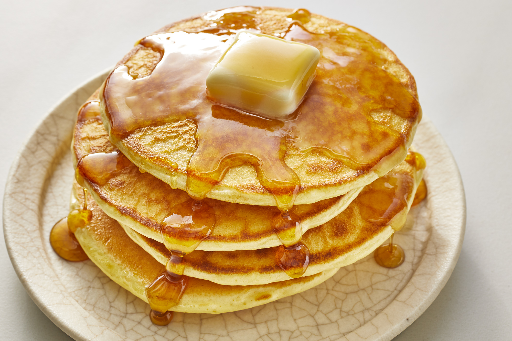

Dor's Pancakes
Excellent for coding night

Good & Tasty Pancakes
Nothing is better than some fluffiness Pancakes for a night full of code.
down below you'll see all you need for making your own delicious Pancakes
Ingredients
- 1 cup all-purpose flour.
- 2 tablespoons white sugar.
- 2 teaspoons baking powder.
- 1 teaspoon salt.
- 4 teaspoons sugar.
- 1 egg.
- 1 cup milk.
- 3 tablespoons butter, melted.
How to Cook
- In a large bowl, sift together the flour, baking powder, salt and sugar.
- Make a well in the center and pour in the milk, egg and melted butter, mix until smooth.
- Heat a lightly oiled griddle or frying pan over medium-high heat.
- Pour or scoop the batter onto the griddle, using approximately 1/4 cup for each pancake. Brown on both sides
- serve hot, whit lots of chocolate, honey or maple syrup.